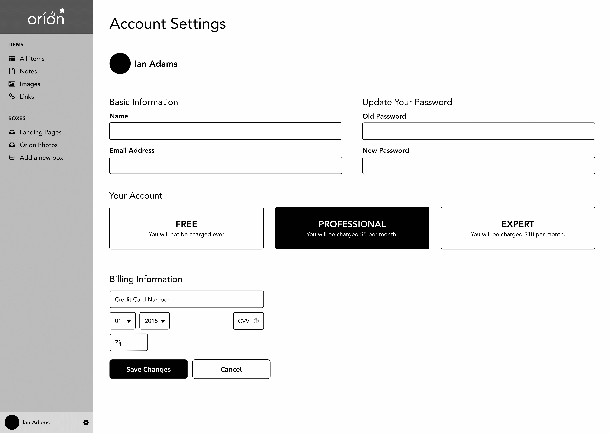
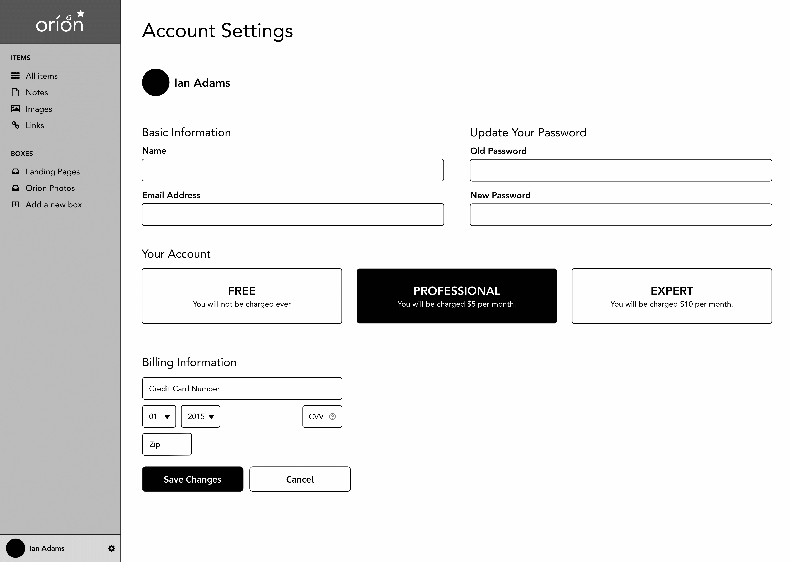

Case Study
“ asd”
Click to view InVision prototype
The goal wasasing to use as possible. easily diulating to the senses.
mixture of parameters, such as dark roast coffees from Asia or all flavored green teas. The cessprocess.
Click to view InVision prototype
lkjsdf;lgksfd;gksjgl;k

sdjklfa;sdlfkjasl;fajsf;kl
asldkfjads;lkfjasd;lkj
survey from which I gleaned the main desires of potential online tea and coffee shoppers. nd ample specifications.
Competitive analysis pace. Peet
lkjf;lkasdjf;laskdfj;akl
asdflkjadlfkasd;fklaj
sldkfna;sdlfkjas;lkfja
personas tstraightforward ordering and shipping.
Key survey insights
Sample persona based on a seasoned user from the business world. Click here to open all three personas as a PDF file in a new tab.
into user stories and then constructing user flows fr\sting a change or refund. Thw.


n on branding. I cs. ee.

Below is some sketching I did to create a logo. . In other instances, sket.
Click here to open style guide as a PDF file in a new tab.
Next began the wireframing stage, as clickability of category ity. User testing

A few homepage layout ideas made in Balsamiq

Low fidelity wireframes from left to right (or top to bottom): account sign-up screen, dashboard layout, and account screen with upgrade modal window

 


High fidelity wireframes created in Adobe Illustrator from top: sign in screen with feedback in form fields, edit note screen, edit image screen, account settings screen, edit avatar photo modal window, blank dashboard screen with alternative horizontal top navigation bar
Moving into the full mockup stage, a series of A / B tests on UsabilityHub
Interface mockups used for navigation testing on UsabilityHub

Home page design submitted for user first impressions via Usability Hub's Five Second Test. I found that users were a little disoriented by the diagonal, very spread out look of things, delaying their learning what the page was really about.
Creating the mockups re to the background while keeping them pro experience. See examples below:

bonwell is far from and truly never “final.”
Click to view InVision prototype Back to top